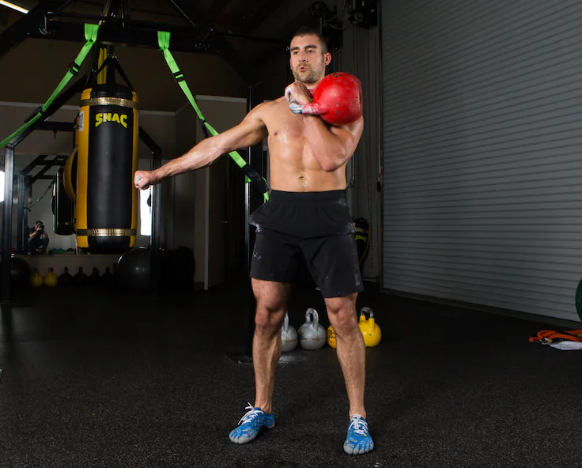

“Ouch!”
Have you ever made this sound when cleaning a kettlebell?
{first_name}, you know, when the kettlebell flips over your arm and painfully bangs onto your wrist?
If not, can you think of someone you know who is going through this challenge right now?
I was thinking today, and I'm not sure if I’ve ever met a person who didn’t have to go through this learning process, at least for a brief time.
While there are coaches out there who may tell you to "suck it up", I’m here to share that there are things you can do to minimize this issue and improve faster.
Now, in terms of wearing supportive gear, I do support the use of wrist bands in certain times, especially if you’re completely new to clean training (to soften the landing). However, if it becomes a crutch for continuing with a faulty movement pattern, that’s when I’m not super cool with it.
You see, I want your technique to be the saving grace of your lifting, and not have you over-rely on supportive gear.

That's because the issues you experience now on the clean, will also impact all variations of this movement, as well as others that build upon it. For example, the kettlebell snatch, or any sequence of exercises that pick-up from when you finish the clean (the rack position), such as:
- Clean and Press
- Clean and Jerk
- Clean and Squat
- Clean > Press > Windmill Combo
One thing I’ve learned over the years is that many times the same drill to fix a specific issue does not always work.
That said, this morning I woke up feeling inspired after having recently coached a lifter through this very problem while performing an advanced progression of the exercise.
So, I went down into my garage to record two drills that you can utilize right now to help remedy this.
The first drill is called an Assisted Clean, and the second is called a Swing Low Pull.
This video is now up on my IGTV, click here to view it.
You’ll be learning the Swing Low Pull within a 3 movement sequence. The purpose of this is to help you transfer key elements from your swing into your clean, while keeping the kettlebell close to the body.
By practicing these drills, the kettlebell will be traveling around your arm and land smoothly and (quietly ; ) onto your forearm.
I hope you enjoy this video and implement these drills right away!
Wishing you all the best,
Mike
P.S.
You’re probably aware that high-performance training of any type involves more than what you do in the gym. In fact, MUCH more. That’s why in the upcoming Kettlebell Lifestyle program you will be supported by more than 8 health and wellness experts that know exactly how to facilitate lasting change at the deepest level.
Tomorrow you’ll get an inside sneak peek at some of these special people here to help ensure your success...you may even recognize a few of them
; ) Stay tuned, great stuff is coming!
|